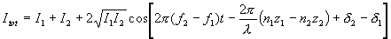
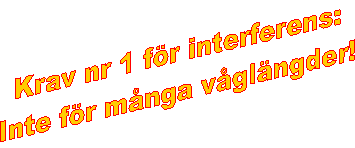
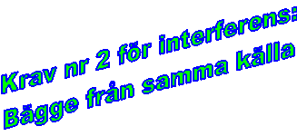
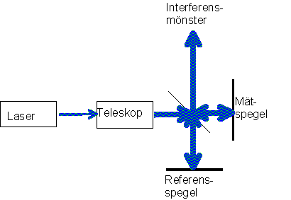

Interferens och optiska filter
Att ljuset �r en v�g yttrar sig bland annat i att en ljusv�g kan
interferera med en annan och p� s�tt f�rst�rka eller f�rsvaga den.
Det finns en lite matlabssnutt
som kan anv�ndas f�r att simulera detta.
N�r tv� v�gor ska interferera blir den totala intensiteten

vilket vi visat i ljudavsnittet.
I den sista termen �r z str�cka resp str�le g�tt, n det
brytningsindex den g�tt genom, f frekvensen och d
�r begynnelsefas dvs om just den v�gen hade max, min eller nollst�lle
(eller ngt annat) vid x=0 och t=0.

Om de b�gge str�larna har olika v�gl�ngd har de ocks� olika frekvens
och d� kommer den sista av termerna att variera med
skillnadsfrekvensen mellan v�gorna. Denna �r f�r ljus mycket h�g, s�
h�g att det i normalfall inte finns n�gon m�jlighet att detektera den
(hundratals THz). Enda undantaget �r n�r man har en enf�rgad str�le
och skiftar den mycket m�ttligt i v�gl�ngd, s�som vid dopplerm�tningar, d� skillnadsfrekvensen kan g� ner till hundratal MHz. Vi kan allts�
i alla andra till�mpningar kr�va att str�larna ska ha samma v�gl�ngd,
eller �tminstone inneh�lla samma v�gl�ngder. Har vi med
tv� flerf�rgade str�lar att g�ra inteferera n�mligen varje v�gl�ng i
den ena str�len med sin "like" i den andra. Detta g�r att vi
vid en del interferensfenomen med vitt ljus (t.ex. interferens i
oljeskikt p� vattenyta) f�r "riktningsberoende
interferensf�rgfenomen" (det skimrar skulle den tekniskt
obevandrade s�ga). I m�nga fall syns ingen interferens alls d�f�r att
de olika f�rgernas max och min ligger s� t�tt att m�nstren flyter
ihop.

Ett annat krav (�n enf�rgadhet) f�r att interferens ska vara
observerbar, �r att begynnelsefasen, d, inte
varierar mellan de b�gge str�larna. Tyv�rr g�r det det f�r de allra
flesta ljusk�llor, inklusive lasrar. I tv� lampor exempelvis byter vi
begynnelsefas varje g�ng en atom slutar s�nda ut ljus och en annan tar
vid. Det praktiska resultatet av detta �r att b�gge ljusstr�larna
m�ste komma fr�n samma k�lla, f�r att sedan p� ett eller annat s�tt
delats upp och g�tt tv� olika v�gar. Ett exempel p� detta �r n�r en
del av ljuset reflekteras fr�n ovansidan och en annan del fr�n
undersidan av ett tunnt skikt (oljan p� vatten t ex)
Vid interferens i tunnt skikt f�renklas
uttrycket ovan till:
H�r har vi gl�mt eller f�rsummat ett antal saker. Vilka? !!!!
R �r reflektansen fr�n varje gr�nsyta och kan r�knas ut med Fresnels
formler som vi kommer till p� n�sta sida, praktiskt blir den n�gra
procent i varje fall. Termen p
ska tas med om den ena (men inte b�gge) av reflektionerna sker mot ett
medium med h�gre n �n det str�len kom fr�n, annars inte.
En mer korrekt ber�kning som �r giltig �ven f�r h�ga v�rden p� R kan man l�sa h�r.
Detta kan anv�ndas n�r man vill minimera reflexer s�som vid
antireflexbehandling, eller n�r man vill �ka reflektansen s�som vid
halvgenomskinliga speglar (eller enkelriktade speglar som de s�ger i
TV-deckarna).
I en antireflexbendling vill man att de reflekterade str�larna ska ta
ut interferera destruktivt och s� fullst�ndigt som m�jligt sl�cka ut
varandra. Lyckas man med det har tv� saker h�nt. F�r det f�rsta
slipper man reflexer, vilket inneb�r att sp�kbilder av exempelvis
solen i en kameralins vid motljusfotografering blir svagare, eller
inte syns alls. Men f�r det andra, och mycket viktigare, kommer allt
ljus igenom gr�nsytan. Eftersom interferens inte inneb�r att ljus
f�rsvinner (vart skulle energin ta v�gen??) kommer det ljus som i
fr�nvaro av antireflexbehandling skulle reflekterats ist�llet att
transmitteras.
Dvs sk�let till att man antireflexbehandlar �r att man vill minska
ljusf�rlusterna. I en obehandlad glas/luftyta f�rlorar man ca 4% vid
varje yta. I ett 11linsigt zoom-objektiv (som allts� har 22 ytor)
skulle man d� f�rlora 60% (0.9622=0.40 �terst�r).
F�r att f� denna fullst�ndiga utsl�ckning av de reflekterade
str�larna ska tjockleken p� skiktet vara l/4nskikt. F�rs�k visa detta!
Med dessutom ska skiktet v�ljas s� att de b�gge ytornas reflektans
blir s� lika som m�jligt. En svag str�le kan inte sl�cka ut en
starkare, oberoende av hur ligger i fas i f�rh�llande till varandra.
F�r att uppn� detta borde skiktets brytningsindex ligga p� roten ur
substratindex. F�r vanligt glas med n=1.54 borde man allts� anv�nda
ett skikt med n=1.24, vilket inte finns. Det l�gsta skiktindex som
finns �r 1.38 (MgO), vilket medf�r att om man bara vill ha ett skikt
blir inte antireflexbehandlingen ideal. Ett s�tt att l�sa detta �r att
l�gga p� fler skikt och l�ta (den matematiskt mycket jobbigare)
interferensen mellan dem totalt sett bli destruktiv.
Flera skikt l�ser dessutom ytterligare ett problem, n�mligen att en AR-behandling med ett skikt egentligen bara fungerar f�r en v�gl�ngd (eftersom skikttjockleken beror av v�gl�ngden). �ldre/billigare AR-behandlingar k�nns d�rf�r igen p� att en reflex fr�n en vit lampa i dem ser lila ut. Varf�r? !!!!
Ju fler skikt man v�ljer desto svagare blir reflexen och destor mer
f�rgneutral (vit, men svag)
Interferensfilter �r motsatsen, dvs ett filter best�ende av flera
skikt utformade s� att en enda v�gl�ngd har konstruktiv interferens i
transmission medan alla andra v�gl�ngder reflekteras. Dessa har stor
anv�ndning f�r att d�mpa bakgrundsljus vid laserm�tningar, eftersom
man kan v�lja ett filter som sl�pper igenom exvis ett
v�gl�ngdsintervall p� 3nm, medan det synliga spektrum omfattar ca
300nm (fr�n 400 till 700). Denna �tg�rd medf�r allts� att
signal/brusf�rh�llandet f�rb�ttras en faktor 100!
Interferometri (niv�3)
Att anv�nda interferens f�r m�tning av andra (delvis icke-optiska)
storheter brukar kallas interferometri.
Ett exempel p� s�dan ges av den Michelssoninterferometern i
laserutf�rande (som egentligen borde kallas en modifierad Twyman-Green
interferometer, men inte g�r det).
 Ljuset fr�n en laser f�r passera ett omv�nt teleskop (okularet f�rst) vilket inneb�r att resultatet blir en parallell str�le med radie f�rstorad med kvoten mellan fokall�ngderna. Denna str�le tr�ffar nu den snedst�llda, halvgenomskinliga spegeln (kallas str�ldelare) s� att h�lften av ljuste g�r rakt fram till m�tspegeln och h�lften reflekteras ner till referensspegeln. Vid repektive spegel reflekteras ljuset tillbaka in den riktning det kom ifr�n. N�r det sen f�r andra g�ngen kommer till str�ldelaren upprepas historien och h�lften av varje str�le (dvs tv� fj�rdedelar) g�r tillbaka till lasern och kan avskrivas fr�n resonemanget. Resten kombineras till ett interferensm�nster, vars utseende beror vilka "fel" eller missinjusteringar som f�rekommer. Om vi b�rjar med allting perfekt; ljuset exakt parallellt efter teleskop, str�ldelaren helt plan och exakt i 45�, m�t och referensspegel helt plana och helt vinkelr�ta mot ljuset (b�rjar l�ta ganska orealistiskt eller hur?) s� f�r vi...? !!
Om vi drar ut ena armen?? !!
Om teleskopet inte �r perfekt inst�llt utan ger svagt divergent ljus? !!
Om vi kombinerar armf�rl�ngning och divergent ljus? !!
Om vi vrider en spegel? !!
I enlighet med svaren p� ovanst�ende fr�gor kan man hitta ett antal
olika moder som interferometern kan anv�ndas i. Med helt
"perfekt" inst�llning enligt alternativ 1 ovan kan man m�ta
vibrationer hos eller f�rflyttning av m�tspegeln med noggrannheter p�
ca 0.25 v�gl�ngder.
Rotationer hos objekt f�sta vid m�tspegeln kan m�tas med uppl�sningar
p� tiotal mikroradianer i enlighet med svaret p� sista alternativet
ovan.
Om m�tspegeln ers�tts med en yta vars planhet (eller brist p�
planhet) ska best�mmas kan detta g�ras med en uppl�sning p� br�kdelar
av en v�gl�ngd.
Men den viktigaste industriella till�mpningen �r �nd� att g�ra
uppst�llningen s� perfekt som m�jligt och sedan inf�ra n�got, vars
s�kta egenskap avspeglas i brytningsindex, i ena armen. Variationer i
detta (antingen teporala eller spatiala) kommer sedan att avspeglas i
m�nstret. Med en s�dan uppst�llning kan man m�ta: Temperatur,
temperaturf�rdelningar, tryck, tryckf�rdelnigar, elektriska f�lt, magnetiska f�lt, t�jningar, skjuvsp�nningar, koncentrationsgradienter, laddningsf�rdelningar, tjockleksvariationer
Kort uttryckt: Det mesta
Till n�sta sida
(Polarisation)
Till n�sta kapitel (Modern optronik)